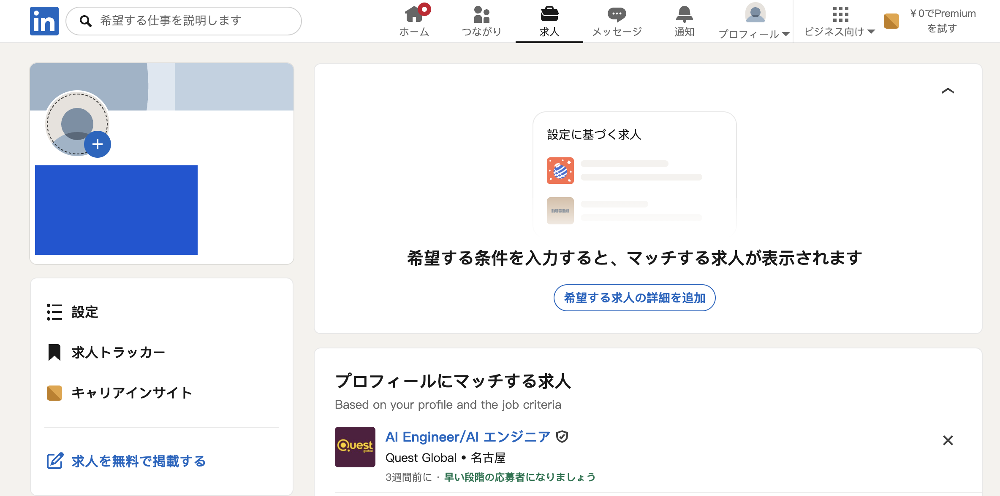

AI初心者さん向け
AIを味方に探す
海外在宅ワーク完全スタートガイド
LinkedInで仕事を探す方法から
案件の見極め・応募準備・Claude活用まで
「海外の仕事って、英語ができないと無理そう…」
「LinkedInって聞いたことはあるけど、使ったことがない」
そんな方でも大丈夫。
このガイドでは、
LinkedInで海外求人を探すところから、
AIを使って求人内容を確認し、
「自分にもできそうな仕事か？」
を判断するところまで、
初心者向けに順番に解説します。
さらに、
求人を探すだけではなく、
プロフィール作成・応募メッセージ作成・実際の仕事で使えるClaudeプロンプトまでまとめました。
このガイドでできること
- LinkedInの基本がわかる
- 日本語を活かせる仕事の探し方がわかる
- 海外求人の英語をAIで確認できる
- 自分に合う案件かAIに判断してもらえる
- 英文プロフィールをAIで作れる
- 応募文をAIで作れる
- 実際の仕事をAIでサポートしてもらえる
海外求人は案件によって、
英語力・経験・学歴・専門スキルなどの条件が異なります。
「日本語ができれば必ずできる仕事」というわけではありません。
このガイドでは、自分に合った案件かどうかをAIと一緒に確認しながら探す方法を紹介します。
STEP 1
LinkedInって何？
LinkedInは、仕事やキャリアに特化したビジネスSNSです。
日本国内だけでなく、海外企業の求人も掲載されています。
リモート求人で絞り込むことで、日本から応募できる仕事を探すこともできます。

STEP 9
応募前チェックリスト
タップするとチェックが入ります。あとで読み返すときの確認用メモとしてお使いください。
- 仕事内容を理解できた
- 必須条件を確認した
- 英語力の条件を確認した
- 報酬を確認した
- 支払方法を確認した
- AI利用ルールを確認した
- 企業名を確認した
- 採用担当者を確認した
- 不自然な外部サイト誘導がない
- 先にお金を払うよう要求されていない
まず今日やること
全部を一気にやる必要はありません。まずは、
- 1LinkedInを開く
- 2「Japanese Writer」と検索
- 3Remoteで絞る
- 4気になる求人を1つClaudeに見せる
ここまでやってみてください。
海外求人というだけで、
「私には無理」
と思っていた人も、
AIを使うことで、
探す・読む・比較するという最初のハードルはかなり下げられます。
大切なのは、
AIに全部やってもらうことではなく、
AIを使って自分の選択肢を増やすこと。
あなたに合う働き方を探す選択肢のひとつとして、
LinkedInもぜひ覗いてみてください。
AIをもっと仕事や暮らしに
活かしてみたい方へ
今回紹介した方法は、
AIの活用法のほんの一例です。
AIを知るだけではなく、
実際の仕事や日々の作業にどう活かすかを知ることで、
できることはさらに広がります。
AI初心者さん向けに、
AIを仕事に活かす考え方や方法をまとめた
『AIマネタイズの教科書』
も無料でご用意しています。